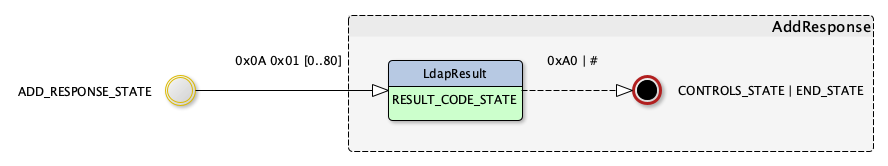
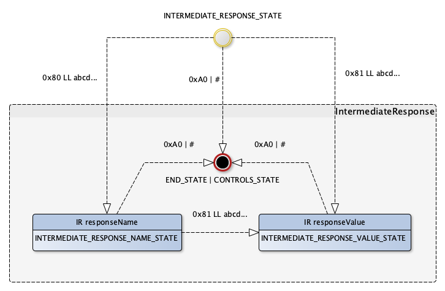
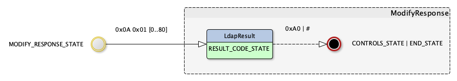

LDAP API
Downloads
Getting Started
Documentation
- Five minute tutorial
- User Guide
- API 1 to 2 migration
- JavaDocs 2
- JavaDocs
- Cross-Reference 2
- Cross-Reference
- Developer Guide
- Internal Guide
Support
Community
About Apache
Table of content
- 4.2 - ASN/1 LDAP Grammar
- LDAPMessage
- LDAPResult
- Controls
- AbandonRequest
- AddRequest
- AddResponse
- BindRequest
- BindResponse
- CompareRequest
- CompareResponse
- DelRequest
- DelResponse
- ExtendedRequest
- ExtendedResponse
- IntermediateResponse
- ModifyRequest
- ModifyResponse
- ModifyDNRequest
- ModifyDNResponse
- SearchRequest
- SearchResultDone
- SearchResultEntry
- SearchResultReference
- UnbindRequest
ASN/1 LDAP grammar
The LDAP grammar is defined in RFC 4511, appendix B.
Here it is:
Lightweight-Directory-Access-Protocol-V3 {1 3 6 1 1 18}
-- Copyright (C) The Internet Society (2006). This version of
-- this ASN.1 module is part of RFC 4511; see the RFC itself
-- for full legal notices.
DEFINITIONS
IMPLICIT TAGS
EXTENSIBILITY IMPLIED ::=
BEGIN
LDAPMessage ::= SEQUENCE {
messageID MessageID,
protocolOp CHOICE {
bindRequest BindRequest,
bindResponse BindResponse,
unbindRequest UnbindRequest,
searchRequest SearchRequest,
searchResEntry SearchResultEntry,
searchResDone SearchResultDone,
searchResRef SearchResultReference,
modifyRequest ModifyRequest,
modifyResponse ModifyResponse,
addRequest AddRequest,
addResponse AddResponse,
delRequest DelRequest,
delResponse DelResponse,
modDNRequest ModifyDNRequest,
modDNResponse ModifyDNResponse,
compareRequest CompareRequest,
compareResponse CompareResponse,
abandonRequest AbandonRequest,
extendedReq ExtendedRequest,
extendedResp ExtendedResponse,
...,
intermediateResponse IntermediateResponse },
controls [0] Controls OPTIONAL }
MessageID ::= INTEGER (0 .. maxInt)
maxInt INTEGER ::= 2147483647 -- (2^^31 - 1) --
LDAPString ::= OCTET STRING -- UTF-8 encoded,
-- [ISO10646] characters
LDAPOID ::= OCTET STRING -- Constrained to <numericoid>
-- [RFC4512]
LDAPDN ::= LDAPString -- Constrained to <distinguishedName>
-- [RFC4514]
RelativeLDAPDN ::= LDAPString -- Constrained to <name-component>
-- [RFC4514]
AttributeDescription ::= LDAPString
-- Constrained to <attributedescription>
-- [RFC4512]
AttributeValue ::= OCTET STRING
AttributeValueAssertion ::= SEQUENCE {
attributeDesc AttributeDescription,
assertionValue AssertionValue }
AssertionValue ::= OCTET STRING
PartialAttribute ::= SEQUENCE {
type AttributeDescription,
vals SET OF value AttributeValue }
Attribute ::= PartialAttribute(WITH COMPONENTS {
...,
vals (SIZE(1..MAX))})
MatchingRuleId ::= LDAPString
LDAPResult ::= SEQUENCE {
resultCode ENUMERATED {
success (0),
operationsError (1),
protocolError (2),
timeLimitExceeded (3),
sizeLimitExceeded (4),
compareFalse (5),
compareTrue (6),
authMethodNotSupported (7),
strongerAuthRequired (8),
-- 9 reserved --
referral (10),
adminLimitExceeded (11),
unavailableCriticalExtension (12),
confidentialityRequired (13),
saslBindInProgress (14),
noSuchAttribute (16),
undefinedAttributeType (17),
inappropriateMatching (18),
constraintViolation (19),
attributeOrValueExists (20),
invalidAttributeSyntax (21),
-- 22-31 unused --
noSuchObject (32),
aliasProblem (33),
invalidDNSyntax (34),
-- 35 reserved for undefined isLeaf --
aliasDereferencingProblem (36),
-- 37-47 unused --
inappropriateAuthentication (48),
invalidCredentials (49),
insufficientAccessRights (50),
busy (51),
unavailable (52),
unwillingToPerform (53),
loopDetect (54),
-- 55-63 unused --
namingViolation (64),
objectClassViolation (65),
notAllowedOnNonLeaf (66),
notAllowedOnRDN (67),
entryAlreadyExists (68),
objectClassModsProhibited (69),
-- 70 reserved for CLDAP --
affectsMultipleDSAs (71),
-- 72-79 unused --
other (80),
... },
matchedDN LDAPDN,
diagnosticMessage LDAPString,
referral [3] Referral OPTIONAL }
Referral ::= SEQUENCE SIZE (1..MAX) OF uri URI
URI ::= LDAPString -- limited to characters permitted in
-- URIs
Controls ::= SEQUENCE OF control Control
Control ::= SEQUENCE {
controlType LDAPOID,
criticality BOOLEAN DEFAULT FALSE,
controlValue OCTET STRING OPTIONAL }
BindRequest ::= [APPLICATION 0] SEQUENCE {
version INTEGER (1 .. 127),
name LDAPDN,
authentication AuthenticationChoice }
AuthenticationChoice ::= CHOICE {
simple [0] OCTET STRING,
-- 1 and 2 reserved
sasl [3] SaslCredentials,
... }
SaslCredentials ::= SEQUENCE {
mechanism LDAPString,
credentials OCTET STRING OPTIONAL }
BindResponse ::= [APPLICATION 1] SEQUENCE {
COMPONENTS OF LDAPResult,
serverSaslCreds [7] OCTET STRING OPTIONAL }
UnbindRequest ::= [APPLICATION 2] NULL
SearchRequest ::= [APPLICATION 3] SEQUENCE {
baseObject LDAPDN,
scope ENUMERATED {
baseObject (0),
singleLevel (1),
wholeSubtree (2),
... },
derefAliases ENUMERATED {
neverDerefAliases (0),
derefInSearching (1),
derefFindingBaseObj (2),
derefAlways (3) },
sizeLimit INTEGER (0 .. maxInt),
timeLimit INTEGER (0 .. maxInt),
typesOnly BOOLEAN,
filter Filter,
attributes AttributeSelection }
AttributeSelection ::= SEQUENCE OF selector LDAPString
-- The LDAPString is constrained to
-- <attributeSelector> in Section 4.5.1.8
Filter ::= CHOICE {
and [0] SET SIZE (1..MAX) OF filter Filter,
or [1] SET SIZE (1..MAX) OF filter Filter,
not [2] Filter,
equalityMatch [3] AttributeValueAssertion,
substrings [4] SubstringFilter,
greaterOrEqual [5] AttributeValueAssertion,
lessOrEqual [6] AttributeValueAssertion,
present [7] AttributeDescription,
approxMatch [8] AttributeValueAssertion,
extensibleMatch [9] MatchingRuleAssertion,
... }
SubstringFilter ::= SEQUENCE {
type AttributeDescription,
substrings SEQUENCE SIZE (1..MAX) OF substring CHOICE {
initial [0] AssertionValue, -- can occur at most once
any [1] AssertionValue,
final [2] AssertionValue } -- can occur at most once
}
MatchingRuleAssertion ::= SEQUENCE {
matchingRule [1] MatchingRuleId OPTIONAL,
type [2] AttributeDescription OPTIONAL,
matchValue [3] AssertionValue,
dnAttributes [4] BOOLEAN DEFAULT FALSE }
SearchResultEntry ::= [APPLICATION 4] SEQUENCE {
objectName LDAPDN,
attributes PartialAttributeList }
PartialAttributeList ::= SEQUENCE OF
partialAttribute PartialAttribute
SearchResultReference ::= [APPLICATION 19] SEQUENCE
SIZE (1..MAX) OF uri URI
SearchResultDone ::= [APPLICATION 5] LDAPResult
ModifyRequest ::= [APPLICATION 6] SEQUENCE {
object LDAPDN,
changes SEQUENCE OF change SEQUENCE {
operation ENUMERATED {
add (0),
delete (1),
replace (2),
increment (3), // RFC 4525 addition
... },
modification PartialAttribute } }
ModifyResponse ::= [APPLICATION 7] LDAPResult
AddRequest ::= [APPLICATION 8] SEQUENCE {
entry LDAPDN,
attributes AttributeList }
AttributeList ::= SEQUENCE OF attribute Attribute
AddResponse ::= [APPLICATION 9] LDAPResult
DelRequest ::= [APPLICATION 10] LDAPDN
DelResponse ::= [APPLICATION 11] LDAPResult
ModifyDNRequest ::= [APPLICATION 12] SEQUENCE {
entry LDAPDN,
newrdn RelativeLDAPDN,
deleteoldrdn BOOLEAN,
newSuperior [0] LDAPDN OPTIONAL }
ModifyDNResponse ::= [APPLICATION 13] LDAPResult
CompareRequest ::= [APPLICATION 14] SEQUENCE {
entry LDAPDN,
ava AttributeValueAssertion }
CompareResponse ::= [APPLICATION 15] LDAPResult
AbandonRequest ::= [APPLICATION 16] MessageID
ExtendedRequest ::= [APPLICATION 23] SEQUENCE {
requestName [0] LDAPOID,
requestValue [1] OCTET STRING OPTIONAL }
ExtendedResponse ::= [APPLICATION 24] SEQUENCE {
COMPONENTS OF LDAPResult,
responseName [10] LDAPOID OPTIONAL,
responseValue [11] OCTET STRING OPTIONAL }
IntermediateResponse ::= [APPLICATION 25] SEQUENCE {
responseName [0] LDAPOID OPTIONAL,
responseValue [1] OCTET STRING OPTIONAL }
END
LdapMessage
The LDAPMessage grammar starts with this part:
LDAPMessage ::= SEQUENCE {
messageID INTEGER (0 .. maxInt),
protocolOp CHOICE {
bindRequest BindRequest,
bindResponse BindResponse,
unbindRequest UnbindRequest,
searchRequest SearchRequest,
searchResEntry SearchResultEntry,
searchResDone SearchResultDone,
searchResRef SearchResultReference,
modifyRequest ModifyRequest,
modifyResponse ModifyResponse,
addRequest AddRequest,
addResponse AddResponse,
delRequest DelRequest,
delResponse DelResponse,
modDNRequest ModifyDNRequest,
modDNResponse ModifyDNResponse,
compareRequest CompareRequest,
compareResponse CompareResponse,
abandonRequest AbandonRequest,
extendedReq ExtendedRequest,
extendedResp ExtendedResponse,
...,
intermediateResponse IntermediateResponse },
controls [0] Controls OPTIONAL }
We have three parts:
- The message ID
- The protocol part
- The optional controls
The following picture gives a clear view of the existing transitions:
The green boxes are sub-transitions, which will be descibed below. The red arrow indicates which parts are mandatory. Each transition is based on the tag used between two states.
Here is a flat representation of a LDAP message structure, where we see the encapsulated TLVs:
+---+---+-----------------------------------------------------------------------------------------------------------------+
| | | +---+---+------------+ +---+---+--------------------+ [+---+---+---------------------------------------------+] |
| | | | | | | | | | | [| | | +---+---+---------+ +---+---+---------+ |] |
| T | L | | T | L | message ID | | T | L | protocol operation | [| T | L | | T | L | control | ... | T | L | control | |] |
| | | | | | | | | | | [| | | +-o-+-o-+----o----+ +---+---+---------+ |] |
| | | +-o-+-o-+-----o------+ +-o-+-o-+---------o----------+ [+-o-+-o-+---|---|------|------------------------------+] |
+-o-+-o-+---|---|-------|----------|---|-----------|---------------|---|-----|---|------|---------------------------------+
| | | | | | | | | | | | |
| | | | | | | | | | | | +----------> A control's encoded value
| | | | | | | | | | | |
| | | | | | | | | | | +-----------------> A control's length
| | | | | | | | | | |
| | | | | | | | | | +---------------------> A control's sequence (0x30)
| | | | | | | | | |
| | | | | | | | | +---------------------------> The controls total length
| | | | | | | | |
| | | | | | | | +-------------------------------> The controls sequence tag (0xA0)
| | | | | | | |
| | | | | | | +-----------------------------------------------> The encoded operation
| | | | | | |
| | | | | | +-----------------------------------------------------------> The operation length
| | | | | |
| | | | | +---------------------------------------------------------------> The operation code (can be 0x60 for a BindRequest)
| | | | |
| | | | +--------------------------------------------------------------------------> The message ID
| | | |
| | | +----------------------------------------------------------------------------------> The message ID's length (from 1 to 4)
| | |
| | +--------------------------------------------------------------------------------------> The message ID's tag, 0x02 for an INTEGER
| |
| +--------------------------------------------------------------------------------------------> The LDAP message's length
|
+------------------------------------------------------------------------------------------------> The LDAP message sequence (0x30)
Now, here is the sub-message protocolOp:

It covers all the existing LDAP messages.
LdapResult
The LDAPResult element is part of all the LDAP response. It contains the following informations:
- A result code, indicating either a success (code 0) or an error (code from 1 to 80, but it may be higher in a future version)
- A DN representing the associated entry
- A diagnistic message in case of an error
- An optional list of LDAP URL that may be able to process the operation.
Here is the complete grammar, as defined in RFC4511:
LDAPResult ::= SEQUENCE {
resultCode ENUMERATED {
success (0),
operationsError (1),
protocolError (2),
timeLimitExceeded (3),
sizeLimitExceeded (4),
compareFalse (5),
compareTrue (6),
authMethodNotSupported (7),
strongerAuthRequired (8),
referral (10),
adminLimitExceeded (11),
unavailableCriticalExtension (12),
confidentialityRequired (13),
saslBindInProgress (14),
noSuchAttribute (16),
undefinedAttributeType (17),
inappropriateMatching (18),
constraintViolation (19),
attributeOrValueExists (20),
invalidAttributeSyntax (21),
noSuchObject (32),
aliasProblem (33),
invalidDNSyntax (34),
aliasDereferencingProblem (36),
inappropriateAuthentication (48),
invalidCredentials (49),
insufficientAccessRights (50),
busy (51),
unavailable (52),
unwillingToPerform (53),
loopDetect (54),
namingViolation (64),
objectClassViolation (65),
notAllowedOnNonLeaf (66),
notAllowedOnRDN (67),
entryAlreadyExists (68),
objectClassModsProhibited (69),
affectsMultipleDSAs (71),
other (80),
... },
matchedDN OCTET STRING,
diagnosticMessage OCTET STRING,
referral [3] Referral OPTIONAL }
Referral ::= SEQUENCE SIZE (1..MAX) OF uri OCTET STRING
URI ::= LDAPString -- limited to characters permitted in
-- URIs
The associated state machine is given by this schema:

Controls
The Control grammar is the following:
Controls ::= SEQUENCE OF control Control
Control ::= SEQUENCE {
controlType OCTET STRING,
criticality BOOLEAN DEFAULT FALSE,
controlValue OCTET STRING OPTIONAL
The associated state machine is given by this schema:

There is no mandatory transition.
AbandonRequest operation
The AbandonRequest message grammar is the following:
AbandonRequest ::= [APPLICATION 16] INTEGER (0 .. maxInt)
The state machine for this operation is already described in the LdapMessage state machine. The operation code (0x50) is completed with the ID of the message to be abandonned.
AddRequest operation
The AddRequest message grammar is the following:
AddRequest ::= [APPLICATION 8] SEQUENCE {
entry OCTET STRING,
attributes AttributeList }
AttributeList ::= SEQUENCE OF attribute Attribute
Attribute ::= PartialAttribute(WITH COMPONENTS {
...,
vals (SIZE(1..MAX))})
PartialAttribute ::= SEQUENCE {
type OCTET STRING,
vals SET OF value OCTET STRING }
Its state machine is shown in this picture:

For a AddRequest, only one state is mandatory and must be followed by another state:
- ENTRY_STATE
AddResponse operation
The Add operation response is described by this part of the LDAP grammar:
AddResponse ::= [APPLICATION 9] LDAPResult
The associated state machine is shown below:
There are no mandatory state.
BindRequest operation
The BindRequest message grammar is the following:
BindRequest ::= [APPLICATION 0] SEQUENCE {
version INTEGER (1 .. 127),
name OCTET STRING,
authentication AuthenticationChoice }
AuthenticationChoice ::= CHOICE {
simple [0] OCTET STRING,
sasl [3] SaslCredentials,
... }
SaslCredentials ::= SEQUENCE {
mechanism OCTET STRING,
credentials OCTET STRING OPTIONAL }
Its state machine is shown in this picture:

We have two flavors of Bind:
- Simple bind, which uses a name and its credentials, in clear text
- SASL bind, which use a name, a mechanism and some added data. A dialog will be established, in which some responses and requests will be exchanged, until the authentication is established.
For a BindRequest, only two states are mandatory and must be followed by another state:
- VERSION_STATE
- NAME_STATE
BindResponse operation
The BindResponse message contains two elements:
- A LdapResult element
- An optional response used in a aunthentication dialogue, if the BindRequest message was a SASL one
BindResponse ::= [APPLICATION 1] SEQUENCE {
COMPONENTS OF LDAPResult,
serverSaslCreds [7] OCTET STRING OPTIONAL }
The associated state machine is shown below:

Just because we may have some data after the LDAPResult element, we use a special version of the LDAPResult state machine:
In any case, two states are mandatory:
- RESULT_CODE_BR_STATE
- MATCHED_DN_BR_STATE
CompareRequest operation
The CompareRequest message grammar is the following:
CompareRequest ::= [APPLICATION 14] SEQUENCE {
entry OCTET STRING,
ava AttributeValueAssertion }
AttributeValueAssertion ::= SEQUENCE {
attributeDesc OCTET STRING,
assertionValue OCTET STRING }
Its state machine is shown in this picture:
For a CompareRequest, only one state is mandatory and must be followed by another state:
- AVA_COMP_STATE
CompareResponse operation
The CompareResponse message is described by this part of the LDAP grammar:
CompareResponse ::= [APPLICATION 15] LDAPResult
The associated state machine is shown below:

There are no mandatory state.
DelRequest operation
The DelRequest message is described by this part of the LDAP grammar:
DelRequest ::= [APPLICATION 10] OCTET STRING
The state machine for this operation is already described in the LdapMessage state machine. The operation code (0x4A) is completed with the Object’s DN to be removed.
DelResponse operation
The DelResponse message is described by this part of the LDAP grammar:
DelResponse ::= [APPLICATION 11] LDAPResult
The associated state machine is shown below:
There are no mandatory state.
ExtendedRequest operation
ExtendedResponse operation
IntermediateResponse operation
The IntermediateResponse message is described by this part of the LDAP grammar:
IntermediateResponse ::= [APPLICATION 25] SEQUENCE {
responseName [0] LDAPOID OPTIONAL,
responseValue [1] OCTET STRING OPTIONAL }
The associated state machine is shown below:
There are no mandatory state.
ModifyRequest operation
The ModifyRequest message is described by this part of the LDAP grammar:
ModifyRequest ::= [APPLICATION 6] SEQUENCE {
object OCTET STRING,
changes SEQUENCE OF change SEQUENCE {
operation ENUMERATED {
add (0),
delete (1),
replace (2),
increment (3),
... },
modification PartialAttribute } }
With this common element, PartialAttribute:
PartialAttribute ::= SEQUENCE {
type OCTET STRING,
vals SET OF value OCTET STRING }
(Note: the PartialAttribute sub-element is shared with the AddRequest and SearchResultEntry messages)
The associated state machine is shown below:

Two states are mandatory:
- CHANGES_STATE
- MODIFICATION_STATE
ModifyResponse operation
The ModifyResponse message is described by this part of the LDAP grammar:
ModifyResponse ::= [APPLICATION 7] LDAPResult
The associated state machine is shown below:
There are no mandatory state.
ModifyDNRequest operation
The ModifyDNRequest message grammar is the following:
ModifyDNRequest ::= [APPLICATION 12] SEQUENCE {
entry OCTET STRING,
newrdn OCTET STRING,
deleteoldrdn BOOLEAN,
newSuperior [0] OCTET STRING OPTIONAL }
Its state machine is shown in this picture:

For a ModifyRequest, one state is mandatory and must be followed by another state:
- ENTRY_MOD_DN_STATE
ModifyDNResponse operation
The ModifyDNResponse message is described by this part of the LDAP grammar:
ModifyResponse ::= [APPLICATION 13] LDAPResult
The associated state machine is shown below:

There are no mandatory state.
SearchRequest
SearchResultDone
SearchResultEntry
SearchResultReference
UnbindRequest operation
This is the simplest operation. Its PDU contains only 2 bytes: 0x42 0x00.
UnbindRequest ::= [APPLICATION 2] NULL
Its state machine is already fully contained in the LDAPMEssage state machine, as it’s encoded directly.